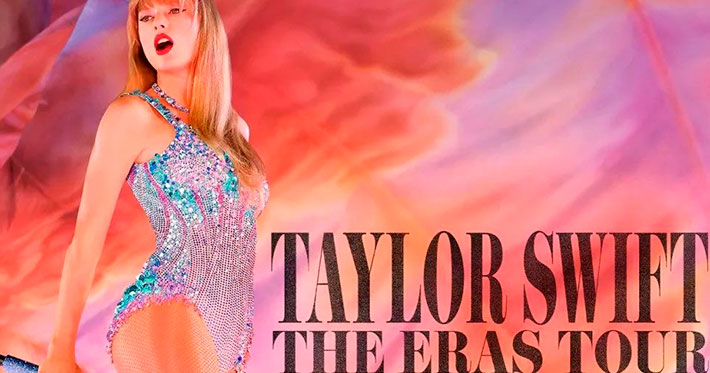

The Eras Tour es la sexta gira de conciertos de la cantante y compositora estadounidense Taylor Swift. Después de no haber realizado la gira de sus álbumes de estudio en 2019, 2020 y 2021 con Lover, Folklore y Evermore debido a la pandemia de COVID-19.
Fecha: vie, 17 mar 2023 dom, 8 dic 2024
Ubicación: Europa, Australia, Asia, América del Norte, América del Sur
Etapas: 5
Fecha de final: 8 de diciembre de 2024, en Vancouver, Canadá
Lugar(es): América del Norte; América del Sur; Asia; Oceanía; Europa
Recaudación: $1.039 mil millones
Taylor Alison Swift es una cantante, compositora, productora discográfica, directora, actriz y empresaria estadounidense. Criada en Wyomissing, se mudó a Nashville a los 14 años para realizar una carrera de música country.
Nacimiento: 13 de diciembre de 1989 (edad 34 años), West Reading, Pensilvania, Estados Unidos
Patrimonio neto: 1.3 miles de millones USD (2024) Forbes
Padres: Andrea Finlay, Scott Swift
Hermanos: Austin Swift
Estatura: 1.8 m